Your PC, Your Rules: AI Agents Meet Windows Personalization
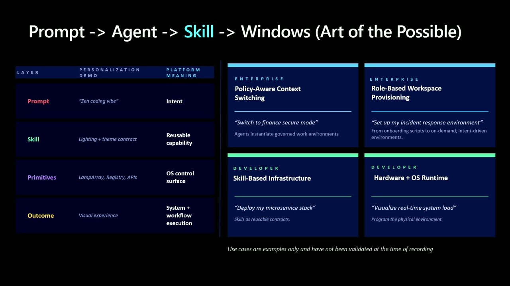
Official description
What if Windows personalization was as simple as asking for a starry night vibe for late night coding and the system responded with custom RGB settings? This session shows how natural language prompts map to real Windows personalization APIs. You learn how to use MCP servers that drive Dynamic Lighting, system sounds, cursor themes, and multi monitor layouts, with a clear flow from prompt to MCP schema to API call, including scope, permissions, and rollback.
Summary
Overview
Samantha Song demonstrates an open-source GitHub Copilot skill that turns natural-language prompts into real Windows personalization actions. By exposing Windows primitives such as Dynamic Lighting, theming, and notification events to agents, the session shows how a single expressed intent can orchestrate wallpaper, accent color, light/dark mode, and per-lamp RGB effects in one coherent pass.
Key announcements
- Open-source Copilot personalization skill (02:54): A skill defined by a
skill.mdcontract at a repo root declares available tools and parameters so any agent can interpret intent and call the tooling without an SDK or API service. - Agentic code generation for RGB effects (03:39): Agents use the public LampArray APIs with a C# driver and Python render-frame scripts to generate custom per-lamp animations like koi fish, shooting stars, and campfire effects from a prompt.
- Whole-system theme orchestration (04:13): A theme module downloads themed wallpapers, writes accent colors to the Explorer accent registry path, and applies light/dark mode in a single pass, shipping with real Microsoft MSIX package themes.
- Notification watcher (08:02): A watcher monitors Windows toast events and flashes the keyboard red on incoming messages, resuming with no state loss to support focus mode.
Topics covered
- Mapping natural-language prompts to real Windows personalization APIs
- The
skill.mdcontract as the interface between user intent and agent tooling - Per-lamp lighting effects via LampArray APIs using a C# device driver and Python render-frame scripts
- System theming across wallpaper, accent color, taskbar color, and light/dark mode
- Registry-level personalization (Explorer accent registry path)
- Intent as a first-class system input executed directly against the OS
- Enterprise extensions such as a "secure finance mode" aligning apps and access boundaries
- Building the skill itself with GitHub Copilot scaffolding the driver, effect scripts, and theme engine
- Crowdsourcing and sharing skills through an open repository
Notable quotes
"That markdown file is your contract with the agent. It declares what tools are available, what commands to run, and what parameters they accept." — Samantha Song
"The underlying change is intent becoming a first-class system input." — Samantha Song
"We are investing in exposing Windows primitives so that agents can do more with the platform and make it personal." — Samantha Song
Products and tools mentioned
- Windows
- GitHub Copilot
- GitHub Copilot CLI
- Windows Dynamic Lighting
- LampArray APIs
- MSIX
- C#/.NET
- Python
- Spotify (sync)
- Windows toast notifications
Speakers featured
- Samantha Song — Product Manager, Windows platform
Follow-up resources
- github.com/samanthamsong/windows-personalization-skill — clone and fork the open-source personalization skill
- GitHub Copilot CLI install link (referenced on-screen)
Frames
{kind=link}
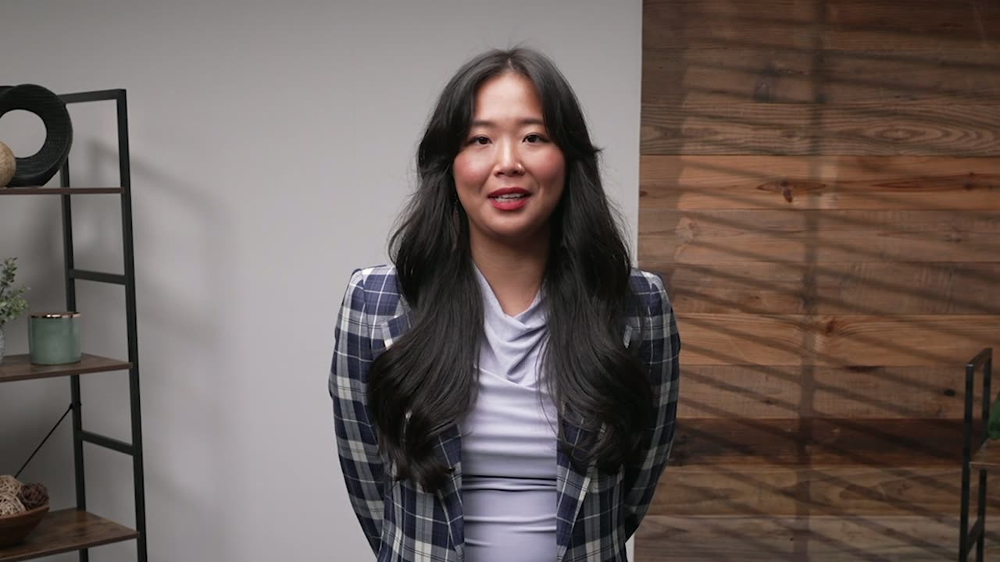
{kind=link}
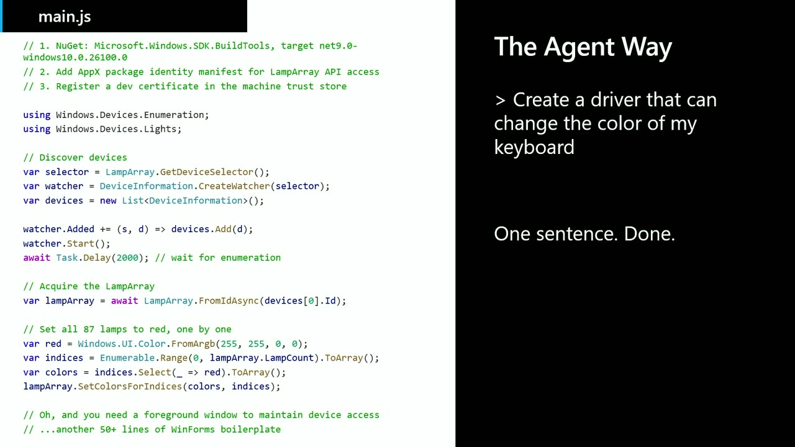
{kind=link}
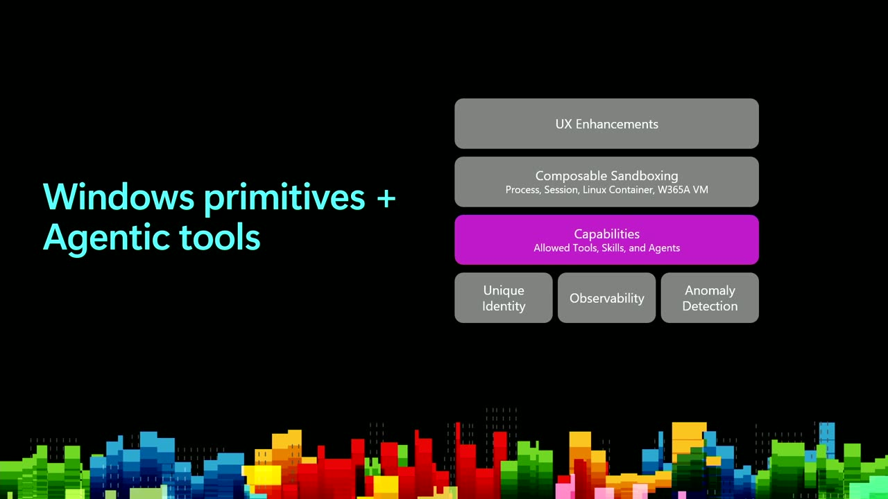
{kind=link}
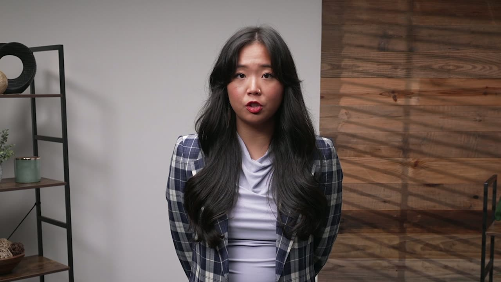
{kind=link}
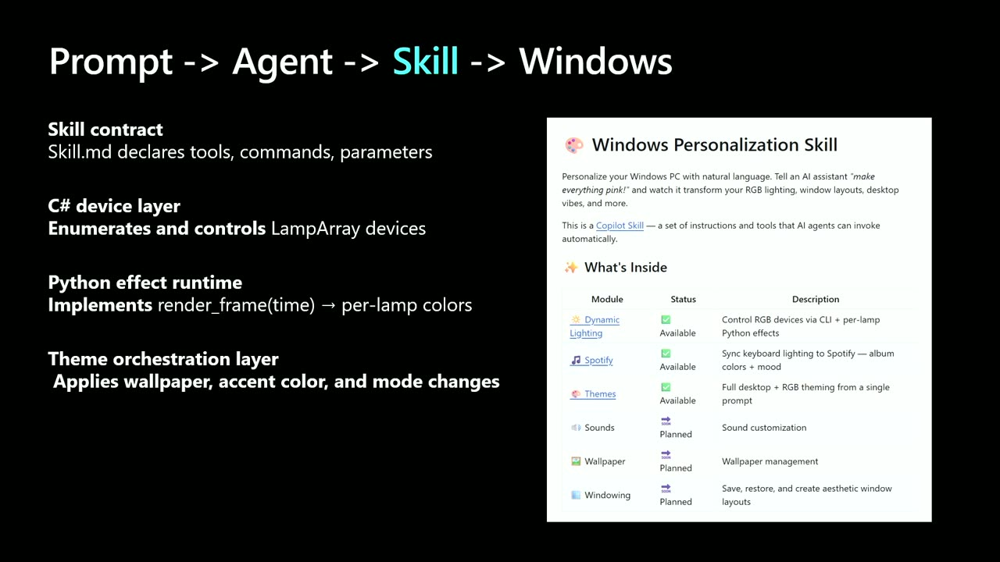
{kind=link}
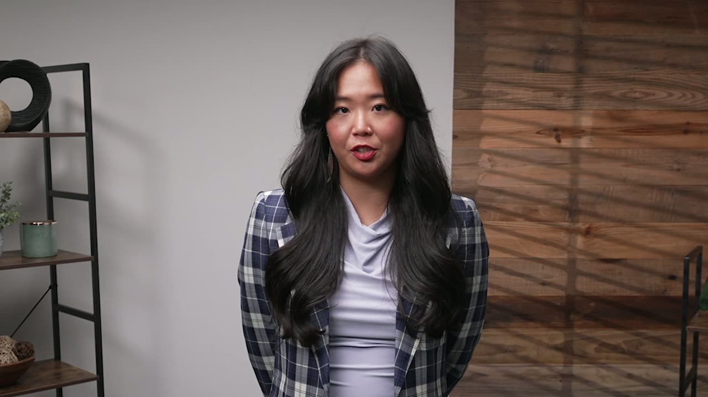
{kind=link}
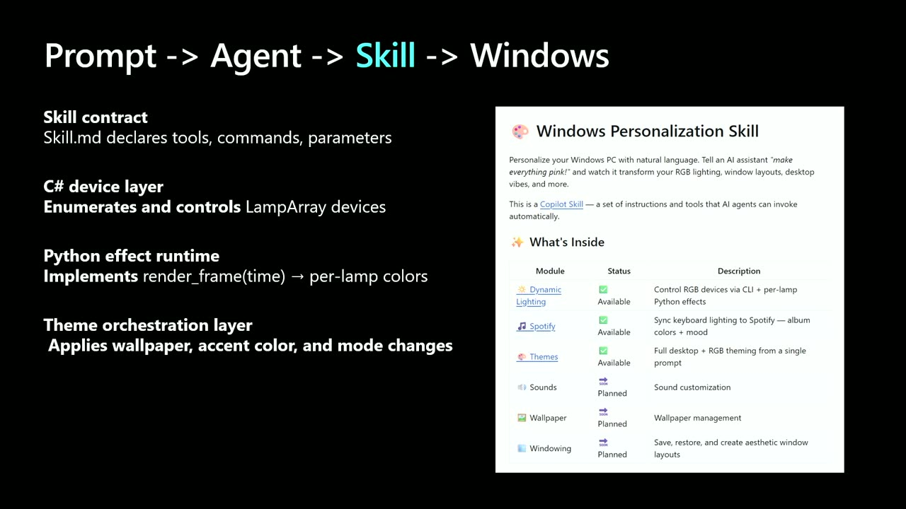
{kind=link}
{kind=link}
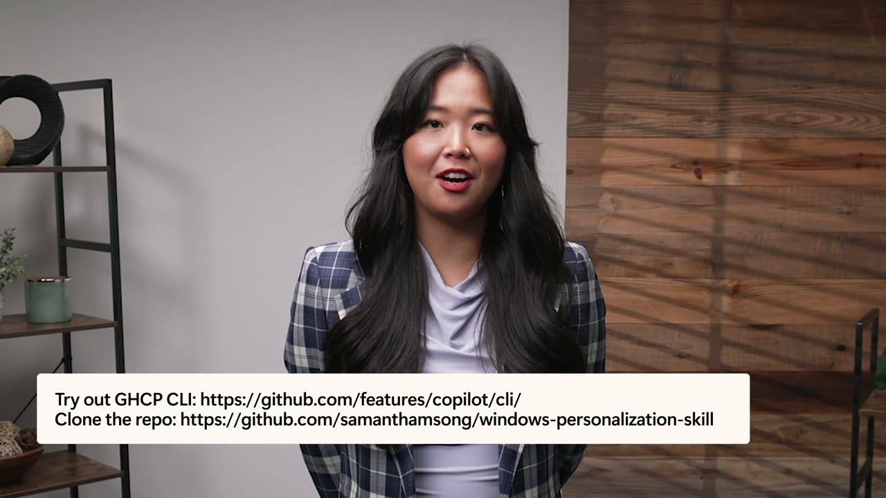
{kind=link}
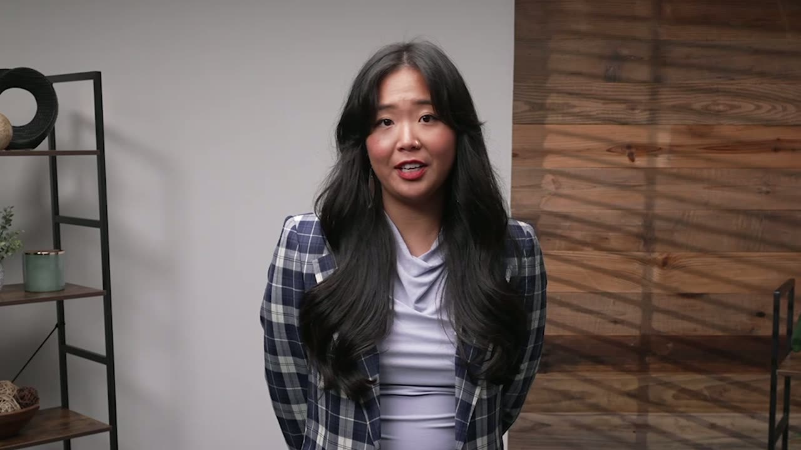
{kind=link}
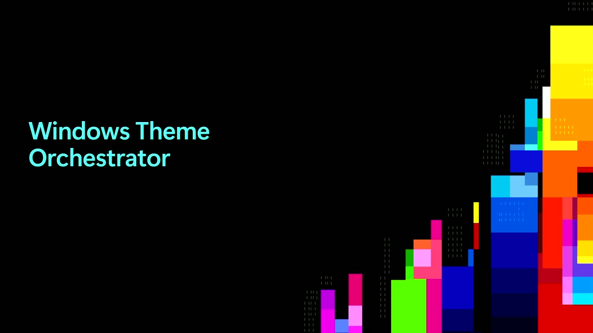
{kind=link}
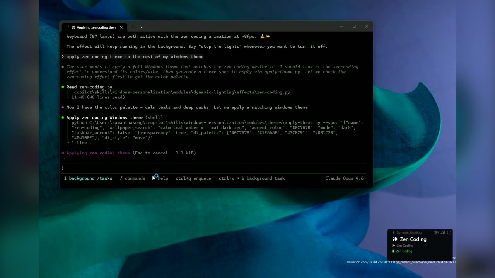
{kind=link}
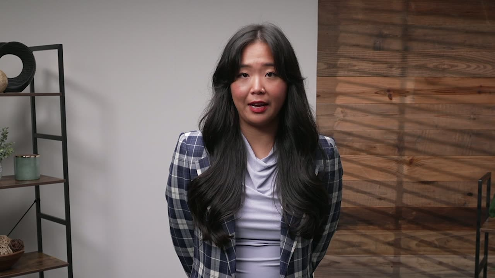
{kind=link}
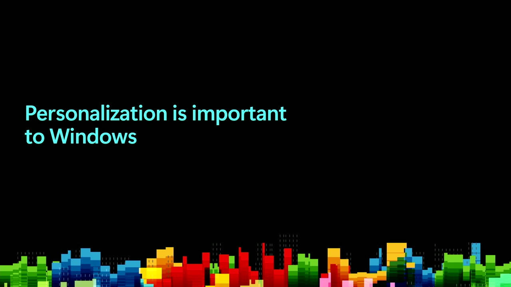
{kind=link}
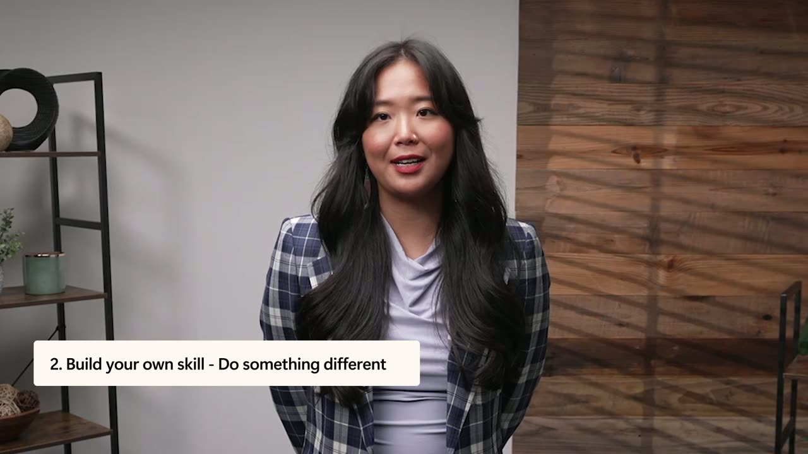
Frames around each announcement
Transcript
Show / hide transcript (12,928 chars)
[00:00:01] SAMANTHA SONG: Hi, I'm Samantha Song [00:00:02] and I'm a product manager on the Windows platform. [00:00:05] Check this out. [00:00:06] My keyboard looks like a koi fish pond right now, [00:00:09] 87 individual LEDs, each one a pixel in a little aquatic scene. [00:00:15] Fish are swimming, lily pads are floating, [00:00:17] and there's ripple physics. [00:00:19] My PC orchestrated all of this [00:00:22] through natural language instructions. [00:00:24] As developers, we spend so much time on our computers. [00:00:28] Half of my time awake is spent looking at my Windows device. [00:00:32] It should at least look and feel personal, and not just [00:00:35] like a default install that goes to a billion other people. [00:00:38] Today, personalization means digging [00:00:41] through nested settings panels [00:00:43] and toggling options you didn't know existed. [00:00:46] Want to coordinate your accent color, wallpaper, [00:00:49] and keyboard lighting? [00:00:50] That's three different settings pages at a minimum. [00:00:53] And if you want to go deeper, you're looking [00:00:55] at potentially multiple third-party apps [00:00:58] and navigating registry keys. [00:01:00] As a developer, you know these APIs exist, [00:01:03] but stitching them together into something [00:01:05] that feels good could be a weekend project [00:01:07] that you never get to. [00:01:09] Like here, this is just part of the code that you would need [00:01:12] to write to just turn your keyboard red. [00:01:14] But what if you could tell your agent that you want to turn [00:01:17] on your Zen coding vibe and it handles all of it? [00:01:20] Your wallpaper, accent color, dark mode, [00:01:22] RGB lighting in one shot? [00:01:24] That would be fun. [00:01:26] Or have it dynamically adjust to your computer use needs. [00:01:30] Like I love to watch music videos while I work, [00:01:32] so I customized my keyboard so that it reflects the colors [00:01:35] on my screen as I have music videos playing [00:01:38] in the background. [00:01:40] So how can you do this? [00:01:41] Let me break it down. [00:01:42] I've created a skill [00:01:43] that streamlines personalization with agents. [00:01:46] Windows provides the capabilities [00:01:48] so that agents can interact directly with the OS. [00:01:51] Agents can generate their own code, use MCP servers, skills, [00:01:55] all to accomplish the task you have described [00:01:58] through natural language. [00:02:00] Today I'll be showing you my skill, which exists as a repo [00:02:03] with a skill.md at the root. [00:02:05] That markdown file is your contract with the agent. [00:02:08] It declares what tools are available, what commands to run, [00:02:11] and what parameters they accept. [00:02:14] The agent reads it, reasons about user's intent, [00:02:17] and calls your tooling. [00:02:18] No SDK to integrate, no API service to design. [00:02:22] Skills are great because they define clear guidelines [00:02:25] for agents. [00:02:26] So instead of spinning their wheels, wasting tokens, [00:02:29] trying to interpret your intent, [00:02:31] they know to use these predefined tools [00:02:33] to accomplish a type of task. [00:02:35] This intelligence layer, [00:02:37] paired with exposed Windows capabilities, [00:02:39] means that we can get creative here. [00:02:42] You say, make everything cherry blossom themed for spring, [00:02:45] and the agent picks your wallpaper, [00:02:47] chooses a pink accent color, [00:02:50] enables taskbar color using skill commands [00:02:52] that map to real Windows APIs. [00:02:54] The skill I'll be demoing is an open-source Copilot skill. [00:02:58] I am a huge fan of colorful lights. [00:03:00] I have my RGB dynamic lighting enabled keyboard [00:03:04] and a lamp that I love. [00:03:06] Previously, I would have to go into settings and play [00:03:08] around with the preset effects and colors to get close [00:03:11] to the vibe that I wanted to feel that day, which was fine. [00:03:15] It would just take time, and I was limited [00:03:17] to what was already available in settings, [00:03:19] which are great effects meant to appeal [00:03:21] to a broad range of users. [00:03:23] But what if I wanted my RGB keyboard to reflect my creative [00:03:26] and artistic personality? [00:03:28] What if I wanted it to reflect my love of music? [00:03:31] Or what if I just woke up one day [00:03:33] and decided I wanted my keyboard to feel like a Zen garden [00:03:36] with blooming flowers? [00:03:39] Agents can use public LampArray APIs to design [00:03:41] and implement cool per lamp effects and animations. [00:03:45] And that's what I've programmed my skill to do. [00:03:47] The skills modules execute it reliably against real OS APIs. [00:03:52] The C# driver discovers all LampArray devices. [00:03:56] The Python effect scripts implement render frame, [00:03:58] a function, from time to per lamp colors. [00:04:02] Koi fish, shooting stars, ocean waves, falling raindrops, [00:04:06] all just math that translates to color. [00:04:10] The theme module goes beyond RGB. [00:04:13] You say ocean theme, and the skill orchestrates everything [00:04:16] in a single pass. [00:04:17] It can download themed wallpapers, write accent colors [00:04:21] to the Explorer accent registry path, and more. [00:04:24] This skill ships with a library [00:04:26] of real Microsoft MSIX package themes. [00:04:30] Personalization is the visible scenario. [00:04:32] The underlying change is intent becoming a first-class [00:04:35] system input. [00:04:37] In this experience, I expressed a single intent. [00:04:40] An agent interprets it [00:04:42] and executes it directly against Windows. [00:04:45] There is no manual setup across themes, lighting, or settings. [00:04:49] The system treats it as one coherent action. [00:04:52] And from there, you can start to see the art of the possible. [00:04:55] At the enterprise level, you could imagine a world [00:04:58] where a user switches into a secure finance mode, [00:05:02] and the system aligns apps, access boundaries, [00:05:05] and environment automatically. [00:05:07] And for developers, you could imagine skills becoming the [00:05:10] interface layer, where instead of scripts [00:05:12] and fragmented tooling, capabilities are defined once [00:05:16] and reused consistently by agents. [00:05:19] Windows is evolving into a platform [00:05:21] where natural language can map to real system outcomes, [00:05:24] with the structure and primitives needed to make [00:05:28] that reliable, safe, and extensible. [00:05:31] To build the skill I'll be demoing today, [00:05:32] I described my vision to GitHub Copilot, [00:05:35] and it scaffolded the.NET driver, [00:05:37] wrote the effect scripts, built the theme engine, everything. [00:05:41] I used a GitHub Copilot CLI, [00:05:44] which you can install from the link here. [00:05:46] And I'm also showing a link to the public repo for my skill. [00:05:49] First, I'm going to show off how agents can generate custom [00:05:52] animations based on a user's prompt. [00:05:56] My keyboard is running one right now. [00:05:58] This effect actually came to me in a dream. [00:06:01] I was like, what if my keyboard could look [00:06:03] like a koi fish swimming in a pond? [00:06:05] I gave this prompt to my agent, [00:06:06] and it generated a pond simulation [00:06:09] with the 87 individual LEDs in my keyboard. [00:06:12] You can see the swimming fish, lily pads, ripples, [00:06:15] all from just a few lines of Python. [00:06:17] Let's see what other effects it can generate. [00:06:19] Hmm, what about a cozy campfire theme [00:06:22] for all my dynamic lighting compatible devices? [00:06:25] Let's see what it comes up with. [00:06:27] Code generation on Windows. [00:06:29] So powerful. [00:06:30] See what happened? [00:06:32] The agent reasoned, generated a Python script, [00:06:35] implemented render frame with the fire effects, [00:06:38] and ran it on my keyboard and lamp. [00:06:41] That's agentic code generation executing [00:06:43] against real Windows APIs. [00:06:46] But why just stop at my keyboard? [00:06:48] With Windows primitives, I should be able [00:06:50] to change my whole Windows theme. [00:06:52] I'm talking wallpaper, accent color, light mode, dark mode. [00:06:55] One sentence to my agent, and I can change everything. [00:06:59] Let's say I open my desktop in the morning, [00:07:01] and I see the classic Windows Bloom theme, which is beautiful [00:07:05] but maybe doesn't really feel like me. [00:07:07] Today, I'm feeling a bit stressed. [00:07:09] I have a ton of meetings [00:07:11] and several vibe coding projects to work on. [00:07:14] Let's start the day with a Zen coding theme [00:07:16] to facilitate focus. [00:07:18] Let me just type that into my CLI, and let's see what happens. [00:07:33] So much better. [00:07:34] The themes agent can generate a completely new theme, [00:07:37] or it can pull a beautiful Microsoft design theme, [00:07:40] which is what you're seeing here. [00:07:42] And check out my keyboard too. [00:07:44] A new calming effect. [00:07:47] And if I wanted to switch it up later -- [00:07:48] -- cherry blossom theme. [00:07:55] Boom, everything changes again. [00:07:57] Okay, these effects are super cool, [00:07:59] and my Windows is starting to feel more like me. [00:08:02] But I'm a super multitasker who's looking [00:08:04] for productivity gains wherever I can find them. [00:08:07] How can my personalization agent help me be more productive? [00:08:11] I don't have my sound on when I'm focusing, [00:08:13] so often I miss my notifications. [00:08:15] So what if I could flash red whenever I get a notification? [00:08:20] Let me just tell my agent [00:08:21] to flash my keyboard red whenever I get a message [00:08:23] so that I can stay on top of things. [00:08:25] The notification watcher monitors Windows toast events [00:08:28] and resumes with no state loss. [00:08:31] Now, even if I'm in deep focus mode, if Monica messages me, [00:08:34] I'll be able to see it, respond, and go back to focusing [00:08:37] without missing a beat. [00:08:39] Theming and personalization is so important to Windows. [00:08:42] We want developers to have fun coding on Windows and to feel [00:08:45] like their machine is theirs. [00:08:47] We are investing in exposing Windows primitive [00:08:49] so that agents can do more [00:08:51] with the platform and make it personal. [00:08:53] Okay, so to finish up here, [00:08:55] there are three things I want you to do. [00:08:56] First, clone the skill and make it yours, [00:08:59] github.com/samanthamsong/windows personalization skill. [00:09:03] Run the setup and you're up and running. [00:09:05] Use the effects, themes, and Spotify sync [00:09:08] that are already there, or describe something new [00:09:11] to your agent and watch it generate it. [00:09:14] Second, build your own skill and share it. [00:09:17] The skill.md contract is simple. [00:09:19] Declare your tools, write some scripts, [00:09:21] and any agent can invoke them. [00:09:24] Got an idea for a focus mode skill, a weather-reactive theme [00:09:27] that matches the sky outside, a meeting-aware theme switcher, [00:09:31] and the final call to action, [00:09:33] let's crowdsource Windows personalization together. [00:09:36] The repo is open. [00:09:37] I want this to be a place where developers share their skills, [00:09:40] their effects, and their weird and wonderful ideas. [00:09:43] Your koi fish might inspire someone else's jellyfish. [00:09:47] Your synth wave theme might become someone's daily driver. [00:09:50] Fork my skill, build something cool, submit a PR, [00:09:53] and help make Windows PC feel like it belongs [00:09:55] to the person using it.